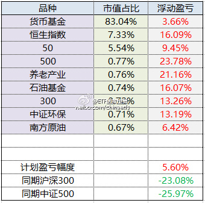
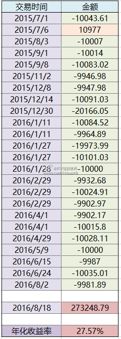

@ETF拯救世界:
2015年7月至今，ETF计划150份总收益率为图一。
所有品种盈利，最高盈利24%，最低盈利品种这个月买入的盈利6%。实际上，如果闲置资金买理财、债券等稍微高一些的品种，总收益也远远不止这个数。这里闲置资金取收益率最低的货基。
同期A股整体下跌25%左右。
第二张图是已买入权益类品种的年化收益率。现在是27%。实际收益率为14%。年化与实际的区别是，年化考虑了时间因素。
A股恒时高估，接下来会继续放眼全球低估市场，择机买入。前路漫漫，继续前行。
所有品种盈利，最高盈利24%，最低盈利品种这个月买入的盈利6%。实际上，如果闲置资金买理财、债券等稍微高一些的品种，总收益也远远不止这个数。这里闲置资金取收益率最低的货基。
同期A股整体下跌25%左右。
第二张图是已买入权益类品种的年化收益率。现在是27%。实际收益率为14%。年化与实际的区别是，年化考虑了时间因素。
A股恒时高估，接下来会继续放眼全球低估市场，择机买入。前路漫漫，继续前行。
- 
- 